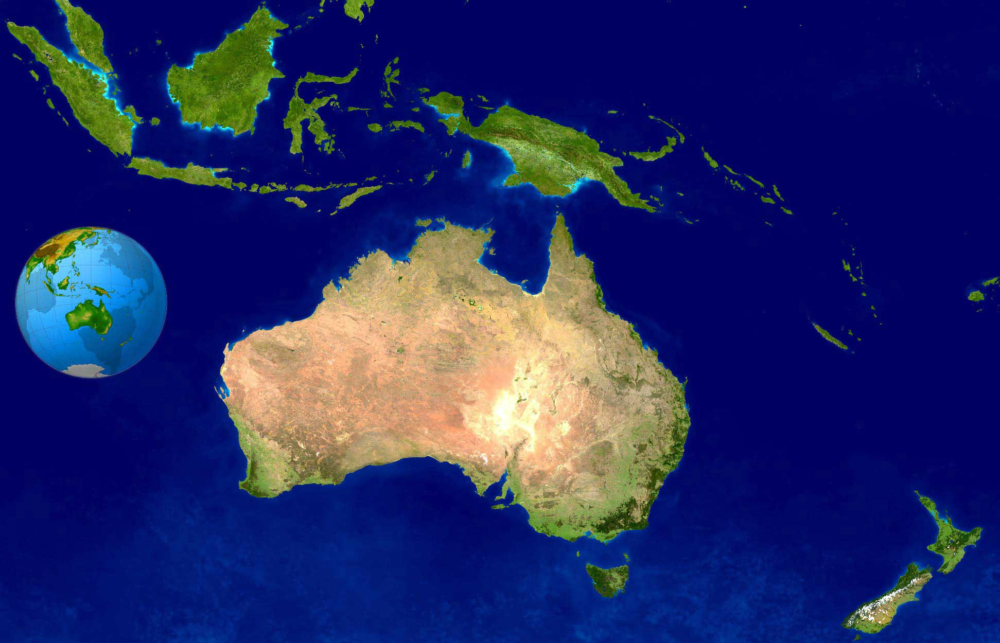

|  | OCEANIA |
Oceanía es el continente más pequeño y menos poblado del mundo, ubicado en el Pacífico sur y oeste. Está compuesto por miles de islas dispersas por el océano Pacífico, con Australia y Nueva Zelanda como los países más grandes y conocidos en la región. Además, Hawái, parte de Estados Unidos, también se encuentra en el océano Pacífico. La geografía de Oceanía es espectacular, con playas de arena blanca, arrecifes de coral, montañas volcánicas y selvas tropicales. La Gran Barrera de Coral en Australia es uno de los arrecifes de coral más grandes y diversos del mundo. La región también alberga una rica biodiversidad marina y es un paraíso para los amantes del buceo y el snorkel. Culturalmente, Oceanía es diversa, con una mezcla de culturas indígenas, europeas y asiáticas. Las culturas polinesias, maoríes y aborígenes son algunas de las más notables en la región. La conexión con la naturaleza y el respeto por el medio ambiente son valores importantes en muchas de las culturas de Oceanía. |
|